មេរៀនទី-៣
សេចក្តីផ្តើម (Introduction)
ពាក្យថា Word Files ស្មើរនឹង Docutment នៅពេលដែលយើងចាប់ផ្តើមបង្កើត ការងារថ្មីមួយនៅលើ Word, យើងត្រូវការចូលទៅកាន់មុនងារបញ្ជា creat a new document, ដែលអាចអោយយើងបង្កើតជាផ្ទាំងការងារទទេមួយ (Blank) ឬអាចជ្រើសយកពី គំរូស្រាប់ (Template)។ យើងក៏ត្រូវយល់ដឹងពីរបៀបបើកឯកសារមានស្រាប់យកមកប្រើផងដែរ។
របៀបង្កើតផ្ទាំងការងារថ្មី (New blank document)
ពេលយើងចាប់ផ្តើមការងារថ្មីនៅលើ Wrod, ជាទូទៅយើងចាប់ផ្តើមជាមួយនឹងផ្ទាំងទទេមួយ (New Blank document), ដើម្បីបង្កើតផ្ទាំងការងារថ្មី សូមអនុវត្តន៏ តាមជំហ៊ានដូចខាងក្រោម៖
👉 ចុចយក File tab ដើម្បីចូលទៅកាន់ ផ្ទាំង Backstage view
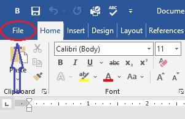
👉 ចុចយកពាក្យបញ្ជា New បន្ទាប់មក យក Blank Document
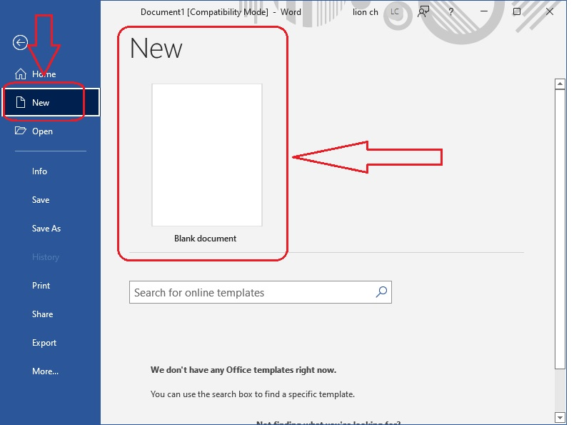
👉 ផ្ទាំងការងារថ្មី បង្ហាញចេញដូចខាងក្រោម។
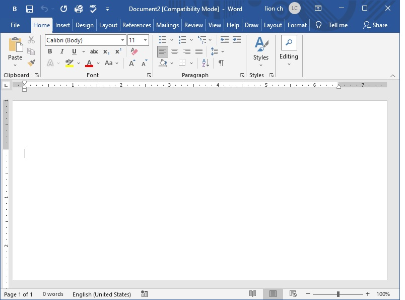
បង្កើតឯកសារគំរូមានស្រាប់ (create document from template)
គំរូ (template), គឺជាឯកសារដែលបានរៀបរៀងទុកជាមុន (predesigned document) យើងអាចប្រើវាបង្កើតជា ទម្រង់ឯកសារថ្មីមួយ បានយ៉ាងឆាប់រហ័ស, ពីព្រោះវាត្រូវបានរៀបចំ និង រចនាទ្រង់ទ្រាយរួចជាស្រេច ដែលអាចជួយយើងកាត់បន្ថយពេលវេលាច្រើនទៅលើការងារ។ ដើម្បីធ្វើការបង្កើត ជាគំរូ template សូមអនុវត្តន៏តាមជំហ៊ានដូចខាងក្រោម៖
👉 ចុចយក File tab ដើម្បីចូលទៅកាន់ ផ្ទាំង Backstage view
👉 ចុចយក New tab នៅពីខាងក្រោម Blank document ជា កន្លែងវាពាក្យស្វែងរកដើម្បីអោយយើងទាញយក គំរូស្រាប់មកប្រើ (search for online template)
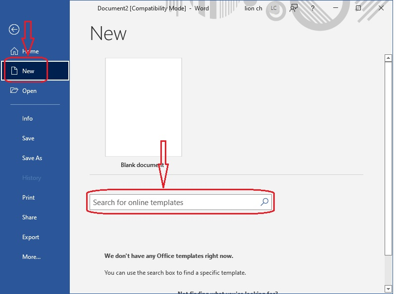
👉 ជ្រើសយកគំរូណាមួយយកប្រើ បន្ទាប់មកចុចលើបូ៊តុង បញ្ជា (creat), (មើលរូបភាពខាងក្រោម)
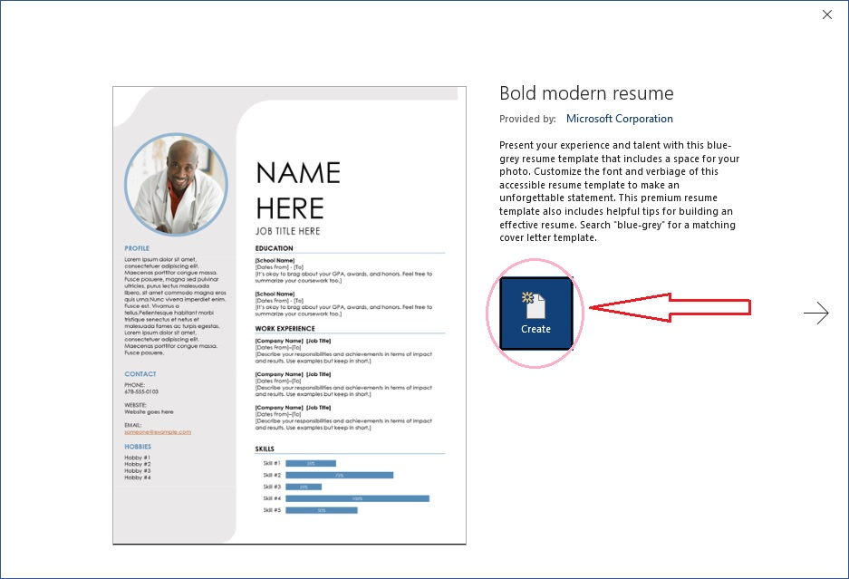
👉 យើងនឹងទទួលបាន គំរូថ្មីមួយដូចខាងក្រោមនេះ

បើកយកឯកសារចាស់មកប្រើ (To Open an existing document)
ជំនួសដោយការបង្កើតឯកសារថ្មី, យើងក៏អាចបើកយកឯកសារចាស់របស់យើងដែលបានរក្សាទុកពីពេលមុខយកមកប្រើឡើងវិញបានផងដែរ។ ដើម្បីបើកយកឯកសារចាស់ សូមអនុវត្តន៏តាមជំហ៊ានដូចខាងក្រោម៖
👉 ចូលទៅកាន់ផ្ទាំង Backstage view ចុចលើពាក្យបញ្ជា Open បន្ទាប់ចុចទៅលើ Browse ដើម្បីចូលទៅកាន់ទីតាំងឯកសារតាំងនៅ
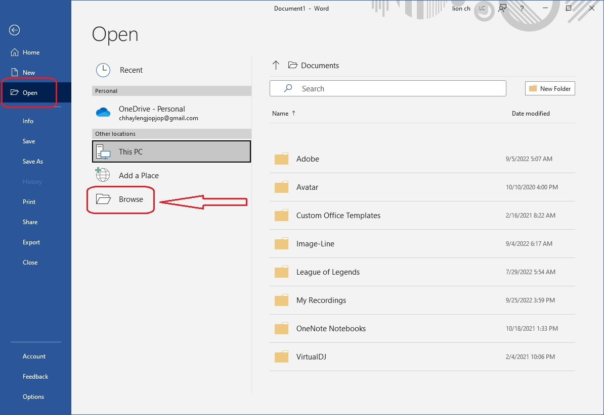
👉 ចុចលើឯកសារមួយណាចង់បើក បន្ទាប់មកចុចលើ open
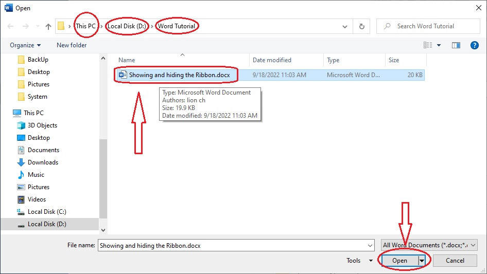
👉 រូប ទម្រង់ឯកសារចាស់
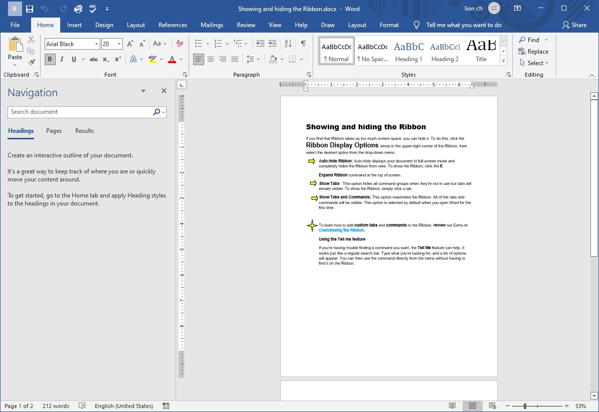
Pin ឯកសារ (To pin document)
to pin the document, ប្រសិនអ្នកធ្វើការនៅលើ បញ្ជីរាយនាម ឈ្មោះឯកសារដែលមានច្រើន ហើយអ្នកចង់ជ្រើសយកឈ្មោះឯកសារ ណាមួយដាក់នៅខាងលើ បញ្ជីឈ្មោះឯកសារផ្សេងទៀត ដើម្បីមានភាពងាយស្រួលជាមួយនិងការងាររបស់អ្នក អ្នកត្រូវ ធ្វើការ Pin ទៅលើ ឯកសារនោះ។ ដើម្បីចូលទៅ pin ឯកសារ សូមអនុវត្តន៏តាមជំហ៊ានដូចនេះ
👉 ចូលទៅកាន់ផ្ទាំង Backstage view ចុចលើពាក្យបញ្ជា Open បន្ទាប់ចុចទៅលើ Recent បន្ទាប់មកចុច document ចុច pin លើឈ្មោះណាមួយនៅក្នុង បញ្ជីរាយនាម
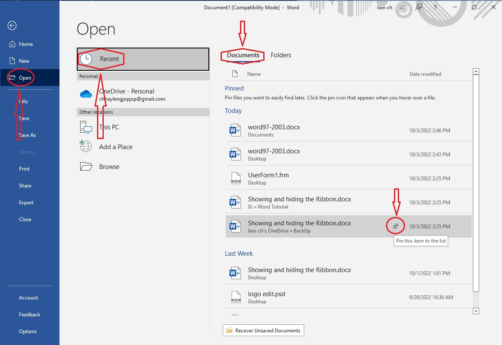
👉 បន្ទាប់ពីធ្វើការ Pined រួចរាល់

បើកឯកសារជំនាន់ចាស់នៅលើកម្មវិធីជំនាន់ថ្មី (Compatibility Mode)
ប្រសិនបើអ្នកមានឯកសារដែលបានធ្វើ នៅលើកម្មវិធី Word ជំនាន់ចាស់ ដូចជា Word 2003, Wrod 2007......, នៅពេលដែលអ្នកប្រើឯកសារទំាងនោះ នៅលើកម្មវិធី បច្ចុប្បន្ន វានិងបង្ហាញចេញជាលក្ខណះ Compatibility Mode
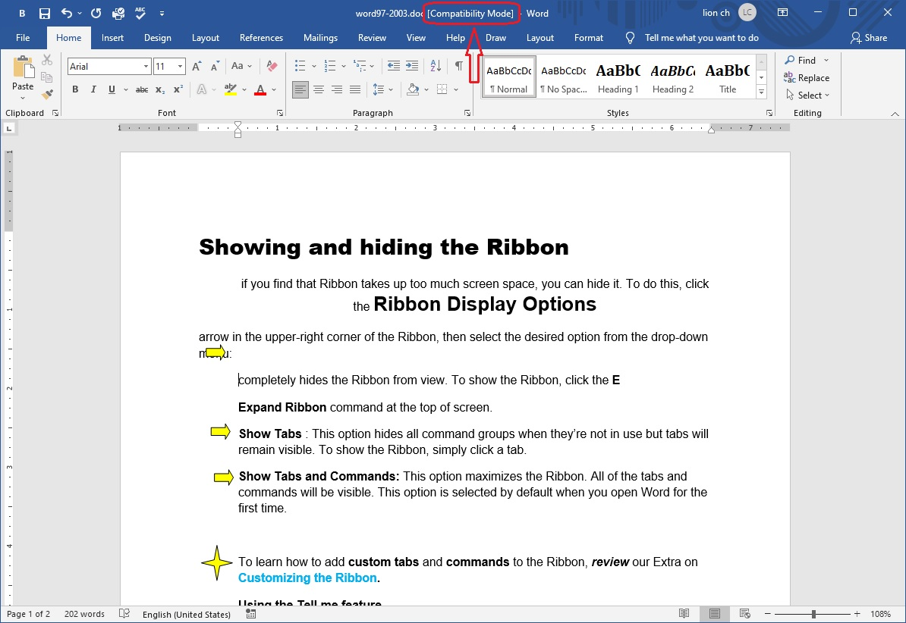
ការបង្ហាញចេញជា Compatibility Mode វានិងធ្វើការផ្លាស់ប្តូរ ឧបករណ៏បញ្ជា មួយចំនួននៅលើកម្មវិធី Word, ដើម្បីធ្វើការផ្លាស់ប្តូរ ឯកសារជំនាន់ចាស់ មកជាជំនាន់ថ្មី យើងអាចធ្វើការ convert បាន ដោយអនុវត្តន៏តាមជំហ៊ានដូចខាងក្រោម៖
👉 ចូលទៅកាន់ផ្ទាំង Backstage View ជ្រើសពាក្យ បញ្ជា Info ចុចយក convert
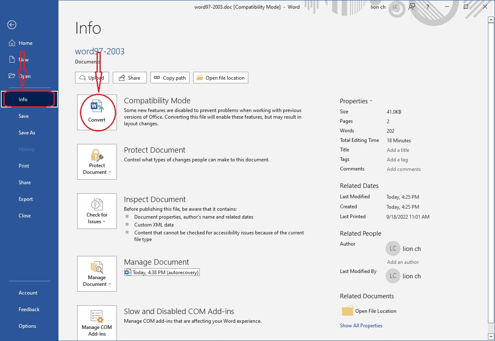
👉 Dialog box និងបង្ហាញដូចខាងក្រោម ចុចយក OK

👉 ឯកសារទំរង់ចាស់ និងប្តូរមក ថ្មី ដូចខាងក្រោម